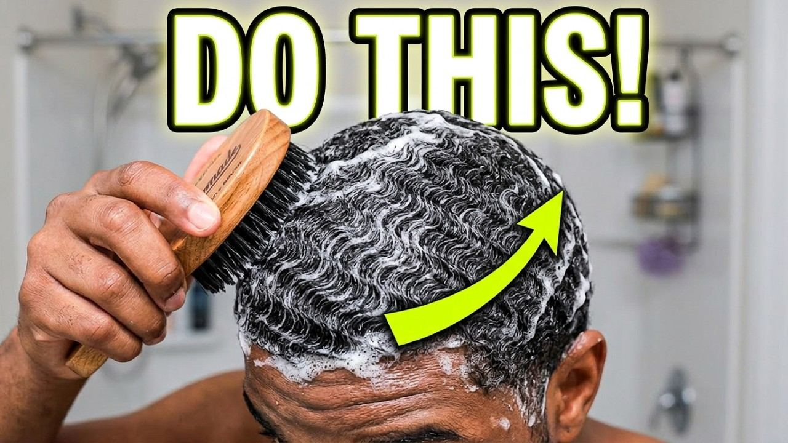

Wash and Style for Beginners: Your First Wave Wash Day, Simplified
The full wash-and-style method can look like a lot when you are new: multiple products, phases, timing. Strip it to its skeleton, though, and a beginner wash day is just four moves — wet it, shampoo it with the brush, condition it with the brush, durag it damp. 2-6 King Wavy (@26KingWavy) teaches exactly this beginner version in the video below, mirror check included. Run this simplified wash weekly while you build the habit, and graduate to the full method when it feels easy.
What you need (and what you don't)
You need: a shampoo, a conditioner, your brush, a moisturiser or light oil, and your durag. That is the entire list. You do not need a wave-specific shampoo, a second brush, a pomade, or anything with '360' printed on the jar — products multiply later if you want them; the routine is what you are building now.
Set everything out before you wet your hair. Mid-wash trips out of the shower with shampoo in your hair are how beginners end up rushing and scrubbing — and scrubbing, even once, is the mistake this whole method exists to prevent.
The four moves
Move one: wet your hair fully and brush it in your pattern directions while the water runs — this pre-lays the hair before product touches it. Move two: shampoo, then brush the lather through for two to three minutes, sections in order. Rinse with the water flowing in pattern directions.
Move three: conditioner in, brush it through the same way, wait a few minutes, rinse most of it out. Move four: while the hair is still damp, moisturise lightly, brush one more full pass, and tie the durag. Leave it on until the hair is dry — hours, or overnight. Four moves, done.
The three beginner mistakes
Scrubbing with fingertips out of habit — catch yourself and reach for the brush instead. Skipping the damp durag because you want to see the result immediately — the result you see early is worse than the one patience gives you. And washing too often because wash day feels productive — twice a week maximum while you are learning, once is fine.
Write your wash day on the calendar and keep it. Beginners who wash on a fixed day build the routine; beginners who wash 'whenever' quietly stop washing the waver's way within a month, and their progress stalls for reasons they never connect.
If your first wash day feels clumsy, that is normal — the brush-instead-of-hands habit takes two or three washes before it feels natural. Judge the method by the morning after, not by how graceful the shower felt. The mirror is the review that counts.
Watch: How to Wash and Style 360 Waves for Beginners — The Right Way (2026)
Video: “How to Wash and Style 360 Waves for Beginners — The Right Way (2026)” by 2-6 King Wavy (@26KingWavy) · Watch on YouTube
Shop the gear
Everything in this guide runs on the right gear: a durag that holds compression without slipping, a cap that stays put, and fabric that treats your hair right. The durag.store launch lineup is built to that standard — dual-layer construction, long tails, and stitching made to survive the routine. Join the launch list and use code GOLDSTANDARD for 15% off your first order.
Keep learning
- The Wash and Style Method: The Complete Wash-Day System for Waves — Basic · Wash & Hair Care
- How to Wash 360 Waves Without Wrecking the Pattern — Intermediate · Wash & Hair Care
- Moisturising Waves Without the Buildup: The Light-Hand Method — Intermediate · Wash & Hair Care
Sources: Video — “How to Wash and Style 360 Waves for Beginners — The Right Way (2026)” by 2-6 King Wavy (@26KingWavy), youtube.com. Guide written by the durag.store Wave Lab.